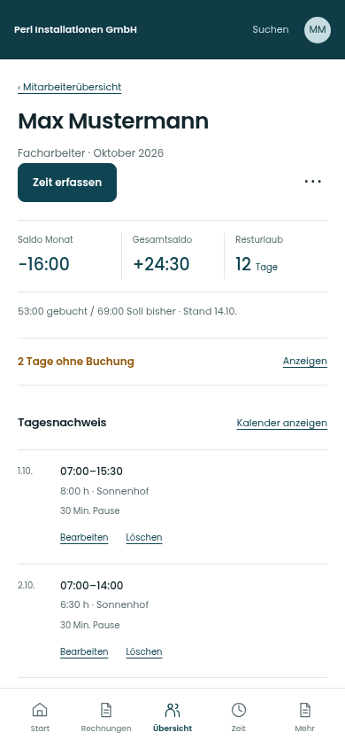
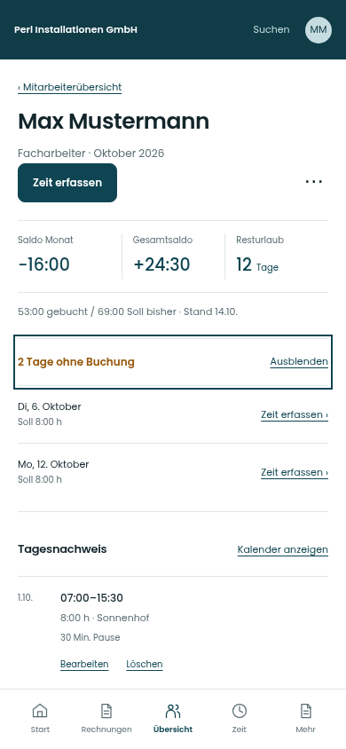

Tage ohne Buchung · mobil einklappbar
Die Anzahl bleibt sichtbar. Die Einzeltage öffnen sich auf Wunsch oder wenn ein fehlender Tag gezielt ausgewählt wird.
Zunächst eingeklappt


Aufgeklappt


Fiktive Beispieldaten · bestehende mobile Navigation erhalten · Live-App unverändert